Судя по всему, любимое число Бифхарта - "12".
Он выпустил в свет двенадцать студийных альбомов; почти половина из них, включая
первый и три последних, содержат по двенадцать вещей. Не все его диски выходили
такими, как он хотел, не все выходили вовремя. Но - "что записал, то записал"...
Информация о самых первых студийных работах MAGIC BAND - синглах "Diddy
Wah Diddy" и "Moonchild" (1966) - включена в раздел "Некоторые
сборники" (см. диск "The Legendary
A&M Sessions").
"Группа (1)" (или 2, или 3) в комментариях
означает: 1) альбом из числа лучших; 2) очень хороший; 3) как бы плохой (он
же "коммерческий" - относится к двум пластинкам 1974 года). Всё это
по моей, конечно же, персональной шкале.
1.Safe As Milk | 2.Mirror
Man | 3.Strictly Personal
4.Trout Mask Replica | 5.Lick
My Decals Off, Baby | 6.The Spotlight Kid
7.Clear Spot | 8.Unconditionally
Guaranteed | 9.Bluejeans & Moonbeams
10.Shiny Beast (B.C.P.) | 11.Doc
At The Radar Station | 12.Ice Cream For Crow
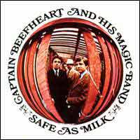
1. "SAFE AS MILK" (33.46)Запись: апрель-май 1967, Sunset Sound Studios/RCA Studios
Выпуск: сентябрь 1967, Buddah (США);
февраль 1968, Pye International (Великобритания)
Впервые на CD: 198?, Castle Classics (Великобритания)
1) Sure 'Nuff 'N Yes I Do (Дон Ван Влит/Херб
Берманн) (2.19)
2) Zig Zag Wanderer (Дон Ван Влит/Херб Берманн) (2.42)
3) Call On Me (Дон Ван Влит) (2.40)
4) Dropout Boogie (Дон Ван Влит/Херб Берманн) (2.26)
5) I'm Glad (Дон Ван Влит) (3.34)
6) Electricity (Дон Ван Влит/Херб Берманн) (3.09)
7) Yellow Brick Road (Дон Ван Влит/Херб Берманн) (2.18)
8) Abba Zaba (Дон Ван Влит) (2.46)
9) Plastic Factory (Дон Ван Влит/Херб Берманн /Джерри Хэндли)
(3.10)
10) Where There's Woman (Дон Ван Влит/Херб Берманн) (2.12)
11) Grown So Ugly (Роберт Пит Уильямс: I've Grown So Ugly, 1960) (2.29)
12) Autumn's Child (Дон Ван Влит/Херб Берманн) (4.01)
Сингл: Yellow Brick Road/Abba Zaba - сентябрь 1967 (США); январь 1968 (Великобритания)
Дон Ван Влит - вокал, губная гармоника, бас-маримба
Алекс Снуффер - гитара, бас-гитара (10)
Джерри Хэндли - бас-гитара
Джон Френч - ударные
Рай Кудер - гитара, бас-гитара (8,11)
Расс Тайтлмен - гитара (12)
Милт Холланд - деревянные ударные (2,4)
Тадж Махал - перкуссия (7)
Сэм Хоффман - терменвокс (6,7)
Продюсеры: Боб Краснов и Ричард Перри
Звук: Хэнк Сикэйло, Гэри Маркер
ПРИМЕЧАНИЯ:
1) Последнее переиздание на CD: 1999, Buddah (США)
(общее время 71.05):
треки (1-12) соответствуют оригиналу (вроде бы с исправленными техническими
огрехами),
плюс 7 бонус-треков (материал "The MIRROR MAN
[BROWN WRAPPER] sessions", октябрь-ноябрь 1967):
13) Safe As Milk (дубль 5) (4.13)
14) On Tomorrow (6.56) [инструментал]
15) Big Black Baby Shoes (4.50) [инструментал]
16) Flower Pot (3.55) [инструментал]
17) Dirty Blue Gene (2.43) [инструментал]
18) Trust Us (дубль 9) (7.22)
19) Korn Ring Finger (7.26)
(все эти композиции, кроме (19), присутствуют на диске "I
MAY BE HUNGRY BUT I SURE AIN'T WEIRD")
2) Альбом выпущен в России на CD (в "исходном" варианте, без бонус-треков) -
под маркой Repertoire Records (Германия), т.е. явно пиратским образом
КОММЕНТАРИЙ К.У.
Первые, не совсем уверенные шаги в "большой" звукозаписи. Хороший старт.
Достойный образец калифорнийского рок-н-ролла (блюз-рока?) эпохи поздних 60-х.
Но с некоторым намёком на дальнейшую "необычность". Легко воспринимается сразу.
Группа (2) - нередко этот альбом называют "революционным" и считают
одним из лучших, но в 67-м чуть ли не каждая рок-пластинка была революционной;
включить же "SAFE AS MILK" в разряд "самых" лично мне мешает,
должно быть, не очень высокое, несколько невнятное техническое качество звучания...
Лучшие: "Electricity", "Sure 'Nuff 'N Yes I Do", "Autumn's Child". Худшая -
"I'm Glad"
<в "статью1">
<альбом
на сайте "Музыка MP3">
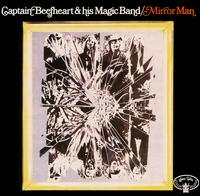
2. "MIRROR MAN" (52.52)Запись: октябрь-ноябрь 1967, TTG Studios/Allegro Sound Studios
Выпуск: апрель 1971, Buddah (США);
май 1971,
Buddah (Великобритания)
Впервые на CD: 1988, Castle Classics (Великобритания)
1) Tarotplane (19.08)
2) Kandy Korn (8.06)
3) 25th Century Quaker (9.50)
4) Mirror Man (15.46)
Автор всех песен - Дон Ван Влит
Дон Ван Влит - вокал, губная гармоника, волынка, шинай [индийский духовой инструмент]
Алекс Снуффер - гитара
Джефф Коттон - гитара
Джерри Хэндли - бас-гитара
Джон Френч - ударные
Продюсер: Боб Краснов
ПРИМЕЧАНИЯ:
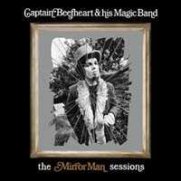
1) Последнее переиздание на CD: 1999, Buddah (США),КОММЕНТАРИЙ К.У.
Вот это уже да! Настоящий "грязный", отвязный блюз с немалой долей этакого
"дикого" авангарда. Очень длинные композиции. Но лично у меня никаких трудностей
с "въездом" не было. Несомненно, группа (1) - невзирая на, мягко говоря, не
очень хороший звук. Лучшие - все, кроме условно худшей "Kandy Korn" (не блюз)
- а многие её считают едва ли не лучшей.
Об издании 99-го года: очень хорошая вещь - и за счёт изменённого порядка вещей
в "исходной" части, и за счёт нескольких замечательных "новых"
песен: лучшие здесь - "Trust Us" и "Gimme Dat Harp Boy",
небезынтересна также "Beatle Bones 'N' Smokin' Stones", а вот "Moody
Liz", по-моему, проходная вещь. Группа - также (1). Если бы версия 71-го
года включала "Trust Us" вместо "Kandy Korn" - это была бы совершенно
убойная пластинка
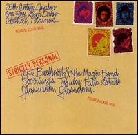
3. "STRICTLY PERSONAL" (38.57)Запись: апрель-май 1968, Sunset Sound Recorders
Выпуск: октябрь 1968, Blue Thumb (США);
декабрь 1968,
Liberty (Великобритания)
Впервые на CD: 1994, Liberty/EMI (Великобритания) - "очищенный" вариант,
отличающийся звучанием от LP
1) Ah Feel Like Ahcid (3.05)
2) Safe As Milk (5.27)
3) Trust Us (8.09)
4) Son Of Mirror Man - Mere Man (5.20)
5) On Tomorrow (3.26)
6) Beatle Bones 'N' Smokin' Stones (3.17)
7) Gimme Dat Harp Boy (5.04)
8) Kandy Korn (5.06)
Автор всех песен - Дон Ван Влит
(Первые версии композиций (2-8) были записаны в октябре-ноябре 1967 во время "The MIRROR MAN [BROWN WRAPPER] sessions")
Дон Ван Влит - вокал, губная гармоника
Алекс Снуффер - гитара
Джефф Коттон - гитара
Джерри Хэндли - бас-гитара
Джон Френч - ударные, перкуссии
Продюсер: Боб Краснов
Звук: Джин Шайвли и Билл Лэйзерус
КОММЕНТАРИЙ К.У.
Вероятно, потому, что услышал этот альбом задним числом, после всего остального,
я воспринимаю его отчасти как причёсаный вариант "THE MIRROR MAN SESSIONS".
Но лишь отчасти. В целом, это хорошая, цельная, своеобразная работа - но слегка
подпорченная благими намерениями продюсера (возникает какая-то ассоциация с
первыми альбомами ЗВУКОВ МУ) и опять же неблестящим качеством записи... Очень
важный этап в творчестве Бифхарта, да и слушается с интересом. Ну и не без блюза.
Лучшие вещи: "Ah Feel Like Ahcid", "Safe As Milk", "Trust Us", "Son
Of Mirror Man - Mere Man", "Gimme Dat Harp Boy". Худшая… да опять у меня получается
"Kandy Korn". И достаточно проходной мне кажется "On Tomorrow"… Группа - видимо
всё же (2). "MIRROR MAN" мне нравится больше…
<в "статью1">
<альбом
на сайте "Музыка MP3">
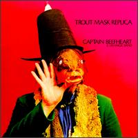
4. "TROUT MASK REPLICA" (79.08) 2LPЗапись: март 1969, Whitney Studios
Выпуск: июль 1969, Straight/Bizzare (США);
ноябрь 1969, Straight/Reprise (Великобритания)
Впервые на CD: 1989, Reprise (США) - на одном диске
1) Frownland (1.41)
2) The Dust Blows Forward 'N The Dust Blows Back (1:53) *
3) Dachau Blues (2.22)
4) Ella Guru (2.26)
5) Hair Pie: Bake 1 (4.58) [инструментал плюс "разговоры"] *
6) Moonlight On Vermont (3.59) **
7) Pachuco Cadaver (4.40)
8) Bills Corpse (1.49)
9) Sweet Sweet Bulbs (2.21)
10) Neon Meate Dream Of A Octafish (2.26)
11) China Pig (4.02) *
12) My Human Gets Me Blues (2.46)
13) Dali's Car (1.24) [инструментал]
14) Hair Pie: Bake 2 (2.23) [инструментал плюс "разговоры"]
15) Pena (2.34)
16) Well (2.07) *
17) When Big Joan Sets Up (5.18)
18) Fallin' Ditch (2.08)
19) Sugar 'N Spikes (2.30)
20) Ant Man Bee (3.56)
21) Orange Claw Hammer (3.34) *
22) Wild Life (3.09)
23) She's Too Much For My Mirror (1.40)
24) Hobo Chang Ba (2.02)
25) The Blimp (mousetrapreplica) (2.04) *
26) Steal Softly Thru Snow (2.18)
27) Old Fart At Play (1.51)
28) Veteran's Day Poppy (4.31) **
Автор всех композиций - Дон Ван Влит
(Композиции, помеченные звёздочкой (*) - были записаны в
январе или феврале 1969 во время "The TROUT
MASK house sessions" (в основном без вокала);
композиции (7) и (28) - помеченные двумя звёздочками (**)
- были записаны в августе 1968 в "неизвестной студии")
Сингл: Pachuco Cadaver/Wild Life (1970, только во Франции)
Дон Ван Влит - вокал, бас-кларнет, саксофоны, волынка, симран
[индийский духовой инструмент(?)]
Билл Хаклроуд - гитары, флейта
Джефф Коттон - гитара, рожок, вокал (15, 25)
Марк Бостон - бас-гитара, декламация
Джон Френч - ударные
Виктор Хэйден - бас-кларнет, вокал(?)
Даг Мун - гитара (11)
Продюсер: Фрэнк Заппа
Звук: Дик Кунc
ПРИМЕЧАНИЯ:
1) В чартах - 21-е место (Великобритания)
2) Выпущен в России на CD (ArsNova, AN-2112) с неверной информацией о годе записи/выпуска,
составе музыкантов и длительности композиций; надпись "Produced Frank Zappa"
на лицевой обложке гораздо заметнее, чем название группы (чего нет на оригинале)
КОММЕНТАРИЙ К.У.
Самый известный альбом. Возможно, самый лучший и самый новаторский. Скорее,
более авангардный, чем блюзовый, но не всегда. Очень разнообразен. Долго воспринимается
с трудом, но зато потом… Конечно, группа (1). Лучшие (лишь некоторые из них):
"China Pig", "Well", "Sugar 'N Spikes", "Moonlight On Vermont", "The Blimp",
"Dali's Car". Худшие: хм-м… что-то и не вспомнить
<в "статью1">
<альбом
на сайте "Музыка MP3">
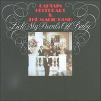
5. "LICK MY DECALS OFF, BABY" (38.51)Запись: лето 1970, United Recorded Corporation
(или The Record Plant)
Выпуск: декабрь 1970, Straight (США);
январь 1971, CBS/Straight (Великобритания)
Впервые на CD: 1989, Straight/Bizzare (США)
1) Lick My Decals Off, Baby (2.39)
2) Doctor Dark (2.45)
3) I Love You, You Big Dummy (2.53)
4) Peon (2.23) [инструментал]
5) Bellerin' Plain (3.35)
6) Woe-Is-Uh-Me-Bop (2.04)
7) Japan In A Dishpan (2.57) [инструментал]
8) I Wanna Find A Woman That'll Hold My Big Toe Till I Have To Go (1.54)
9) Petrified Forest (1.40)
10) One Red Rose That I Mean (1.53) [инструментал]
11) The Buggy Boogie Woogie (2.18)
12) The Smithsonian Institute Blues (Or The Big Dig) (2.10)
13) Space-Age Couple (2.32)
14) The Clouds Are Full Of Wine (Not Whiskey Or Rye) (2.46)
15) Flash Gordon's Ape (4.15)
Автор всех композиций - Дон Ван Влит
Дон Ван Влит - вокал, бас-кларнет, саксофоны, губная гармоника
Билл Хаклроуд - гитары
Марк Бостон - бас-гитара, гитара
Джон Френч - перкуссии, метла (11) [хоть и прикол, но действительно метла
- в качестве перкуссии]
Арт Трипп III - маримба, перкуссии, метла (11)
Продюсер: Дон Ван Влит
Звук: Фил Шайер
ПРИМЕЧАНИЕ:
В чартах - 20-е место (Великобритания)
КОММЕНТАРИЙ К.У.
Ещё один кандидат на звание лучшего. Очень своеобразный минимализм. Этакий
(прото)панк с изрядной долей фри-джаза; если вслушаться - то и блюза навалом.
Нужно время, чтобы въехать. Группа (1). Лучшие: "I Love You, You Big Dummy",
"Peon", "One Red Rose That I Mean", "Woe-Is-Uh-Me-Bop", "The Buggy
Boogie Woogie" и т.д.
<в "статью1">
<альбом
на сайте "Музыка MP3">
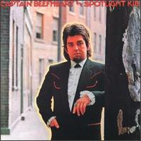
6. "THE SPOTLIGHT KID" (36.03)Запись: май-октябрь 1971, The Record Plant (или Amigo Studios)
Выпуск: январь 1972, Reprise (США);
февраль 1972, Reprise (Великобритания)
Впервые на CD: 1990, BMI (США) - "THE SPOTLIGHT KID"/
1) I'm Gonna Booglarize You Baby (4.35)
2) White Jam (2.55)
3) Blabber 'N Smoke (Дон Ван Влит/Джен Ван Влит?) (2.46)
4) When It Blows Its Stacks (3.40)
5) Alice In Blunderland (3.54) [инструментал]
6) The Spotlight Kid (3.21)
7) Click Clack (3.30)
8) Grow Fins (3.30)
9) There Ain't No Santa Claus On The Evenin' Stage (3.11)
10) Glider (4.34)
Автор всех композиций, кроме (3)? - Дон Ван Влит
Сингл: Click Clack/I'm Gonna Booglarize You Baby (только в США)
Дон Ван Влит - вокал, губная гармоника, колокольчики
Билл Хаклроуд - гитары
Марк Бостон - бас-гитара
Джон Френч - ударные
Арт Трипп III - маримба, фортепиано, клавесин, ударные (1)
Эллиот Ингбер - гитара
Рис Кларк - ударные (10)
Продюсеры: Дон Ван Влит и Фил Шайер
Звук: Фил Шайер
ПРИМЕЧАНИЯ:
1) В чартах - 44-е место (Великобритания)
2) "THE SPOTLIGHT KID"/"CLEAR SPOT" выпущен в России на CD (ArsNova, AN-20313)
КОММЕНТАРИЙ К.У.
Звучит чуть "чище" и "нормальнее", чем предыдущие записи (что само по себе
не есть хорошо, но, в итоге - не так уж важно). Превосходный и оригинальный
блюзовый альбом. Воспринимается неплохо с первого же раза. Группа (1). Лучшие:
"I'm Gonna Booglarise You Baby", "The Spotlight Kid", "Grow Fins", "There Ain't
No Santa Claus On The Evening Stage", "Glider"… Худшая, если можно так выразиться,
вещь - "Alice In Blunderland" (порой кажется нудноватой)
<в "статью1">
<альбом
на сайте "Музыка MP3">
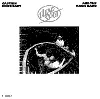
7. "CLEAR SPOT" (37.16)Запись: август-сентябрь 1972, Amigo Studios
Выпуск: ноябрь 1972, Reprise
Впервые на CD: 1990, BMI (США) - "THE SPOTLIGHT KID"/
1) Low Yo Yo Stuff (3.41)
2) Nowadays A Woman's Gotta Hit A Man (3.46)
3) Too Much Time (2.50)
4) Circumstances (3.14)
5) My Head Is My Only House Unless It Rains (2.55)
6) Sun Zoom Spark (2.13)
7) Clear Spot (3.39)
8) Crazy Little Thing (2.39)
9) Long Neck Bottles (3.18)
10) Her Eyes Are A Blue Million Miles (2.57)
11) Big Eyed Beans From Venus (4.23)
12) Golden Birdies (1.38)
Автор всех песен - Дон Ван Влит
Сингл: Too Much Time/My Head Is My Only House Unless It Rains
Дон Ван Влит - вокал, губная гармоника, "wings on singabus" [какой-то
прикол от Бифхарта]
Билл Хаклроуд - гитары, мандолина
Марк Бостон - ритм-гитара, бас-гитара (12)
Рой Эстрада - бас-гитара
Арт Трипп III - ударные, перкуссии
Расс Тайтлмэн - гитара (3)
Милт Холланд - перкуссия
THE BLACKBERRIES - подпевки (3,8)
Джерри Джамонвилл - аранжировки для духовых (2,3,9)
Продюсер: Тед Темплмэн
Звук: Джон Лэнди
ПРИМЕЧАНИЕ:
"THE SPOTLIGHT KID"/"CLEAR SPOT" выпущен в России на CD (ArsNova, AN-20313)
КОММЕНТАРИЙ К.У.
Близкий родственник "The Spotlight Kid", но скорее именно "рок-н-ролльный",
чем собственно блюзовый, и более "лёгкий". Слушается этот альбом очень хорошо.
Группа (1) или (2) - в зависимости от настроения. Лучшие: "Low Yo Yo Stuff"
(просто великолепна), "Circumstances", "Big Eyed Beans From Venus", "Golden
Birdies". Худшая - "Too Much Time"
<в "статью1">
<альбом
на сайте "Музыка MP3">
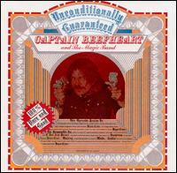
8. "UNCONDITIONALLY GUARANTEED" (31.20)Запись: конец 1973 - начало 1974, Hollywood Sound Studios
Выпуск: апрель 1974, Virgin (Великобритания); Mercury (США)
Впервые на CD: 1987, Virgin
1) Upon The My-O-My (2.43)
2) Sugar Bowl (2.13)
3) New Electric Ride (3.02)
4) Magic Be (2.55)
5) Happy Love Song (3.54)
6) Full Moon, Hot Sun (2.19)
7) I Got Love On My Mind (3.08)
8) This Is The Day (4.51)
9) Lazy Music (2.51)
10) Peaches (3.21)
Авторы всех песен - Дон Ван Влит и Энди ДиМартино(?)
Аранжировки - Энди ДиМартино и Дон Ван Влит
Синглы: Upon The My-O-My/Magic Be (Великобритания);
Upon The My-O-My/I Got Love On My Mind (США)
Дон Ван Влит - вокал, губная гармоника
Билл Хаклроуд - гитары
Марк Бостон - бас-гитара
Алекс Снуффер - гитара
Арт Трипп III - ударные, перкуссии
Марк Марселлино - клавишные
Дел Симмонс - тенор-саксофон, флейта
Энди ДиМартино - акустическая гитара
Продюсер: Энди Ди Мартино
Звук: Джон Гуэсс и Джим Кэллон
ПРИМЕЧАНИЕ:
Выпущен в России на CD (ArsNova, номер не указан)
КОММЕНТАРИЙ К.У.
Неудавшийся "коммерческий" альбом. Своеобразия - ноль, несмотря на состав
(я долго считал, что здесь играет "TRAGIC BAND"). Естественно, группа (3). Но,
в принципе, слушать можно - иногда попадаются неплохие мелодии. Лучшие: "Upon
My-O-My", "This Is The Day". Худшая - "Sugar Bowl" (натуральное безобразие,
даже вокал Бифхарта не спасает)
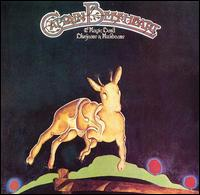
9. "BLUEJEANS & MOONBEAMS" (36.54)Запись: осень 1974, Stronghold Sound Recorders
Выпуск: ноябрь 1974, Virgin (Великобритания); Mercury (США)
Впервые на CD: 1988, Virgin
1) Party Of Special Things To Do (Дон Ван Влит/Эллиот
Ингбер) (2.49)
2) Same Old Blues (Джей Джей Кэйл) (4.00)
3) Observatory Crest (Дон Ван Влит/Эллиот Ингбер) (3.32)
4) Pompadour Swamp (Дон Ван Влит) (3.32)
5) Captain's Holiday (Р.Фельдман/У.Ричмонд/С.Хикерсон/К.Блэкуэлл)
(5.43)
6) Rock 'n' Roll's Evil Doll (Дон Ван Влит/Марк Гиббонс/Айра Ингбер)
(3.20)
7) Further Than We've Gone (Дон Ван Влит/Эллиот Ингбер) (5.31)
8) Twist Ah Luck (Дон Ван Влит/Марк Гиббонс/Айра Ингбер) (3.22)
9) Bluejeans And Moonbeams (Дон Ван Влит) (5.04)
Дон Ван Влит - вокал, губная гармоника
и так называемый "TRAGIC BAND":
Дин Смит - гитары
Айра Ингбер - бас-гитара
Дел Симмонс - тенор-саксофон, флейта
Марк Гиббонс - клавишные
Майкл Смотермэн - клавишные, подпевки
Джин Пелло - ударные
Джимми Кэравэн - клавишные
Тай Граймс - ударные, перкусии
Боб Вэст - бас-гитара (3)
(В студии работал также гитарист Эллиот Ингбер, но сыгранные им партии
в окончательный вариант альбома не вошли)
Продюсер: Энди ДиМартино
Звук: Грег Ладанжи
ПРИМЕЧАНИЯ:
Выпущен в России на CD (без каких бы то ни было названий фирм и номеров)
КОММЕНТАРИЙ К.У
"TRAGIC BAND" и "tragic" Бифхарт. Вторая часть сериала о коммерческой музыке
тех лет. Группа (3). Но (несмотря, опять же, на состав) лично мне он чуть более
симпатичен, чем "Unconditionally…". По-моему, здесь больше относительно удачных
вещей. Лучшие: "Party Of Special Things To Do", "Same Old Blues", "Pompadour
Swamp", "Further Then We've Gone". Худшая - "Twist Ah Luck"
<в "статью1">
<альбом
на сайте "Музыка MP3">
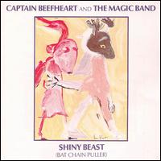
10. "SHINY BEAST (BAT CHAIN PULLER)" (47.25)Запись: июнь-август 1978, The Automatt
Выпуск: осень 1978, Warner Brothers (США);
февраль 1980, Virgin (Великобритания)
Впервые на CD: 1986, Virgin
1) The Floppy Boot Stomp (3.51) *
2) Tropical Hot Dog Night (4.48)
3) Ice Rose (3.37) [инструментал] **
4) Harry Irene (3.42) *
5) You Know You're A Man (3.14)
6) Bat Chain Puller (5.27) *
7) When I See Mommy I Feel Like a Mummy (5.03)
8) Owed T'Alex (Дон Ван Влит/Херб Берманн) (4.06) *
9) Candle Mambo (3.24)
10) Love Lies (5.03)
11) Suction Prints (4.25) [инструментал]
12) Apes-Ma (0.40) [стихи] *
Автор всех композиций, кроме (8) - Дон Ван Влит
(Композиции, помеченные звёздочкой (*), были предназначены
для записанного в 1976 году "великого невыпущенного" альбома "BAT
CHAIN PULLER"; песня (8) называлась "Carson City";
(3) (**) - поздняя версия инструментала "Big Black Baby
Shoes" с "The MIRROR MAN [BROWN
WRAPPER] sessions", 1967)
Дон Ван Влит - вокал, губная гармоника, саксофоны, свист
Джефф Морис Теппер - гитары
Брюс Фаулер - тромбон, духовой бас
Эрик Дрю Фельдман - синтезатор, фортепиано, электропианино, бас-гитара
Ричард Ридас - гитары, аккордеон, безладовый бас
Роберт (Артур) Уильямс - ударные, перкуссии
Арт Трипп III - маримба, перкуссии
Продюсеры: Дон Ван Влит и Пит Джонсон
Звук: Глен Колоткин и Джеффри Норман
ПРИМЕЧАНИЕ:
Выпущен в России на CD (ArsNova, AN-2115)
КОММЕНТАРИЙ К.У.
Как Феникс из пепла. Долгое время я считал этот альбом лучшим. Он, скорее,
из разряда более "традиционных", нежели альтернативно-авангардных работ Бифхарта
(хотя и не без этого). В качестве традиции проступает уже не чисто блюз, а некий
"латиноамериканский джаз". Но, несмотря на вышесказанное, альбом очень своеобразен,
необычен, очень мелодичен, лиричен и (ну ещё для рифмы) - полифоничен. Группа
(1) без всяких сомнений. Лучшие - практически все, но всё же: "Floppy Boot Stomp",
"Ice Rose", "Bat Chain Puller", "Owed T' Alex", "When I See Mommy I Feel Like
A Mummy", "Love Lies". Худшая (выбрал же словечко) - "You Know You're A Man"
(просто она мне чуть меньше нравится)
<в "статью1">
<альбом
на сайте "Музыка MP3">
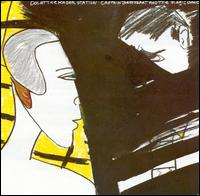
11. "DOC AT THE RADAR STATION" (38.56)Запись: май-июнь 1980, Sound Castle Recording Studios
Выпуск: август 1980, Virgin
Впервые на CD: 1986, Virgin
1) Hot Head (3.23)
2) Ashtray Heart (3.25)
3) A Carrot Is As Close As A Rabbit Gets To A Diamond (1.38)
[инструментал] *
4) Run Paint Run Run (3.40)
5) Sue Egypt (2.57)
6) Brickbats (2.40) *
7) Dirty Blue Gene (3.51)
8) Best Batch Yet (5.02)
9) Telephone (1.31)
10) Flavor Bud Living (1.00) [инструментал] *
11) Sheriff Of Hong Kong (6.34)
12) Making Love To A Vampire With A Monkey On My Knee (3.11)
Автор всех композиций - Дон Ван Влит
(Композиции, помеченные звёздочкой (*), были предназначены
для записанного в 1976 году "великого невыпущенного" альбома "BAT
CHAIN PULLER";
песня (7) не имеет ничего общего, кроме названия, с одноимённым инструменталом
с "The MIRROR MAN [BROWN WRAPPER] sessions",
1967)
Дон Ван Влит - вокал, губная гармоника, саксофоны, бас-кларнет, китайские
гонги
Джефф Морис Теппер - гитары
Эрик Дрю Фельдман - синтезатор, бас-гитара, меллотрон, фортепиано, электропианино
Роберт (Артур) Уильямс - ударные
Брюс Фаулер - тромбон
Джон Френч - гитары, маримба, бас-гитара, ударные (2,11)
Гэри Лукас - гитара (10), французский рожок (8)
Продюсер: Дон Ван Влит
Звук: Глен Колоткин
КОММЕНТАРИЙ К.У.
Также кандидат в "самые-самые". Зрелый, но не укрощённый Бифхарт. Здесь он
демонстрирует и своеобразие и разнообразие. Сплошная его классика. Не для спабонервных.
Группа номер раз (1). Достаточно бессмыслено перечислять, но - лучшие: "Ashtray
Heart", "Run Paint Run Run", "Sue Egypt", "Flavor Bud Living", "Sherif Of Hong
Kong", "Making Love To A Vampire With A Monkey On My Knee"… Совершенно условно
худшая - "Brickbats" (ну, не всегда в кайф)
<"в статью1">
<альбом
на сайте "Музыка MP3">
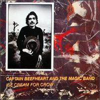
12. "ICE CREAM FOR CROW" (37.36)Запись: июнь-июль 1982, Warner Brothers Recording Studios
Выпуск: сентябрь 1982, Epic/Virgin (США); Virgin (Великобритания)
Впервые на CD: 1989, Virgin
1) Ice Cream For Crow (4.35)
2) The Host The Ghost The Most Holy-O (2.25)
3) Semi-Multicoloured Caucasian (4.20) [инструментал]
4) Hey Garland I Dig Your Tweed Coat (3.13)
5) Evening Bell (2.00) [инструментал]
6) Cardboard Cutout Sundown (2.38)
7) The Past Sure Is Tense (3.21)
8) Ink Mathematics (1.40)
9) The Witch Doctor Life (2.38) **
10) "81" Poop Hatch (2.39) [стихи] *
11) The Thousand Tenth Day Of The Human Totem Pole (5.43) *
12) Skeleton Makes Good (2.17)
Автор всех композиций - Дон Ван Влит
(Композиции, помеченные звёздочкой (*), были предназначены
для записанного в 1976 году "великого невыпущенного" альбома "BAT
CHAIN PULLER";
песня (9) (**) - поздняя версия инструментала "Dirty Blue
Gene" с "The MIRROR MAN [BROWN WRAPPER]
sessions", 1967)
Сингл: Ice Cream For Crow/Light Reflected Off The Oceands Of The Moon (инструментальная версия (4) - саксофон взамен вокала)
Дон Ван Влит - вокал, губная гармоника, сопрано-саксофон, китайские
гонги
Джефф Морис Теппер - гитары, акустическая гитара
Гэри Лукас - гитары, соло-гитара (5)
Ричард Снайдер - бас-гитара, маримба, альт [смычковый]
Клифф Мартинес - ударные, перкуссии
Брюс Фаулер - тромбон
Эрик Дрю Фельдман - фортепиано, "синтезаторный" бас (11)
Продюсер: Дон Ван Влит
Звук: Фил Браун
ПРИМЕЧАНИЕ:
В чартах - 90-е место (Великобритания)
КОММЕНТАРИЙ К.У.
Последняя работа маэстро. "Пёстрый" альбом, точнее не скажешь. Ассоциации
с самыми разными фазами творчества Бифхарта. Чувствуется некоторая усталость
и недоделанность. Тем не менее, очень достойный альбом. Группа (2). Лучшие:
"The 1010th Day Of Human Totem Pole", "Semi-Multicoloured Caucasian", "Evening
Bell", "Ice Cream For Crow", "Cardboard Cutout Sundown". Худшая (а может, и
нет) - "The Past Sure Is Tense"
<"в статью1">
<альбом
на сайте "Музыка mp3">
1.Safe As Milk | 2.Mirror
Man | 3.Strictly Personal
4.Trout Mask Replica | 5.Lick
My Decals Off, Baby | 6.The Spotlight Kid
7.Clear Spot | 8.Unconditionally
Guaranteed | 9.Bluejeans & Moonbeams
10.Shiny Beast (B.C.P.) | 11.Doc
At The Radar Station | 12.Ice Cream For Crow